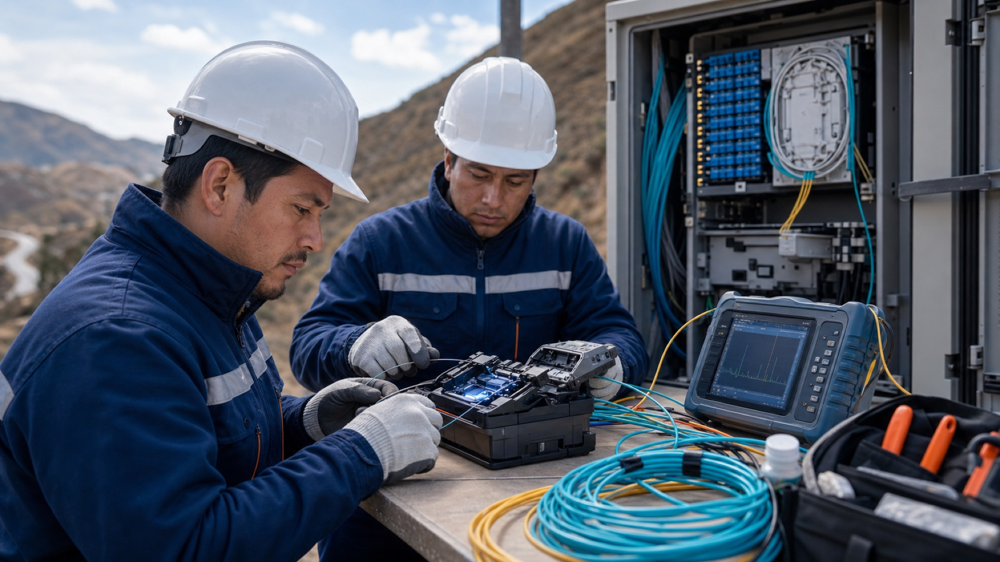
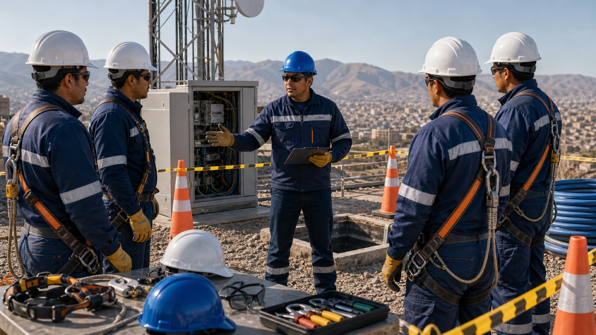
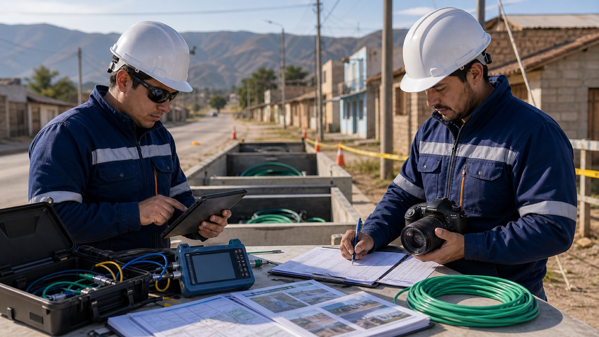
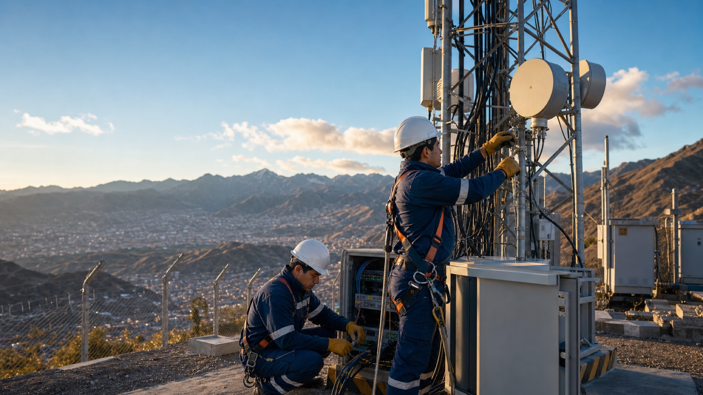

Obras civiles telecom
Excavaciones, canalizaciones, cámaras, ductos, bases de concreto, cerramientos y adecuaciones para redes.
Servicios
Capacidad de ejecución para empresas y operadores: preparación civil, despliegue de fibra óptica, sitios de antenas y mantenimiento. El alcance, los recursos y los criterios de entrega se definen para cada proyecto.

Cobertura integral
Coordinamos cuadrillas, materiales, mediciones y documentación para que cada ruta, sitio o enlace llegue a operación con información clara y soporte continuo. El objetivo es reducir improvisaciones, anticipar riesgos y entregar infraestructura lista para operar.
Por qué contratarnos
Cuando un proyecto de telecomunicaciones falla, el costo no está solo en la obra: también está en los retrasos, cortes de servicio, mala documentación y decisiones tomadas sin información. CIVILTELECOM combina experiencia en campo, trabajo junto a ENTEL, disponibilidad nacional y control técnico para que el cliente tenga más certeza antes, durante y después de la ejecución.
Especialidades
Excavaciones, canalizaciones, cámaras, ductos, bases de concreto, cerramientos y adecuaciones para redes.
Tendido, fusión, etiquetado, pruebas de continuidad y medición para redes troncales, urbanas y rurales.
Montaje, alineación, mantenimiento preventivo y correctivo para sitios de telecomunicaciones.
Inspección de rutas, definición de trazados, verificación de interferencias y apoyo a permisos.
Revisión de ductos, cámaras, empalmes, estructuras y equipos para continuidad del servicio.
Planificación, supervisión, reportes de avance, control de calidad y documentación final.
Especialidades en campo

La obra civil define la base física para una red ordenada, mantenible y escalable.

La fusión, medición y rotulado ayudan a reducir fallas y facilitan futuras ampliaciones.

La señalización, protección personal y supervisión reducen riesgos en cada intervención.

Los controles finales permiten entregar evidencias, observaciones y criterios de aceptación.
Diagnóstico rápido
Ubicación, infraestructura existente y prioridad operativa son la base de una evaluación técnica. La propuesta final requiere revisión del alcance y las condiciones de ejecución.

Proceso operativo
Revisamos objetivo, ubicación, condiciones de acceso, restricciones, riesgos y requerimientos de continuidad.
Definimos trazado, materiales, herramientas, equipos de seguridad, cuadrillas y criterios de aceptación.
Ejecutamos con supervisión, bitácora, control fotográfico, gestión de cambios y coordinación con el cliente.
Validamos resultados, corregimos observaciones y entregamos información útil para operación y mantenimiento.
Sectores atendidos

Canalizaciones, cámaras, cruces y adecuaciones donde la coordinación y seguridad son críticas.

Proyectos de fibra óptica y acceso que acercan servicios digitales a zonas fuera de los centros urbanos.

Soporte para infraestructura en altura, radio bases y componentes que requieren mantenimiento seguro.

Planificación, supervisión y cierre documental para tomar decisiones con información clara.
Cobertura de servicio
CIVILTELECOM puede evaluar proyectos en los nueve departamentos del país. La movilización se planifica según alcance, distancia, accesos, seguridad, materiales y condiciones técnicas de cada obra.
Sitios y enlaces
Nuestro trabajo en torres y radio bases cubre preparación civil, montaje, seguridad de altura, alineación y seguimiento para que el sitio mantenga desempeño operativo.

Entregables habituales
Evidencia de avance, condiciones de sitio, puntos intervenidos y cierre de actividades.
Resultados de continuidad, fusión, inspección o validación técnica según el alcance contratado.
Resumen ejecutivo con hitos, observaciones, pendientes y recomendaciones para seguimiento.
Documento de entrega preparado para facilitar operación, mantenimiento y futuras ampliaciones.